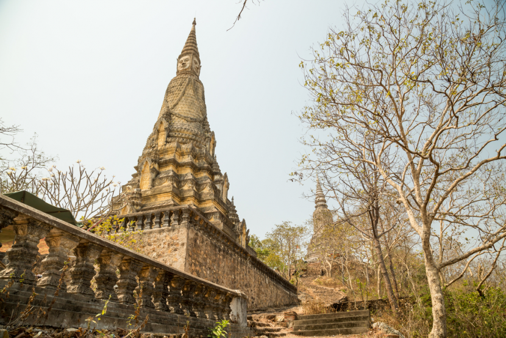
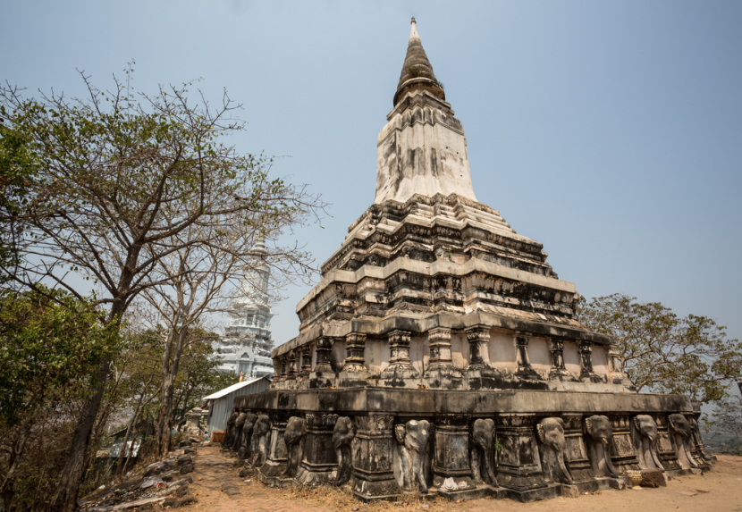

Kampong Speu, west of Phnom Penh and almost on the capital's doorstep, is a province that’s often overlooked, but an ideal place to get off the beaten track. Speu is the Khmer word for “starfruit”, but Kampong Speu is actually famous for its palm sugar, which is considered the best in the Kingdom. The province also produces plenty of teuk t'not chu, or palm wine.
Mount Aoral (Phnom Aoral) is tallest mountain located in this landlocked province bordered by Kandal, Koh Kong, Pursat, Kampot, Takeo and Kampong Chhnang. It is at 1813 meters above sea level.
 